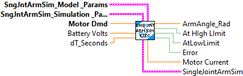
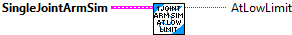
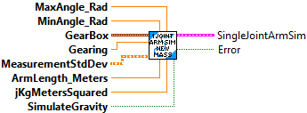
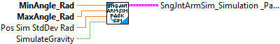
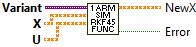
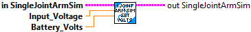
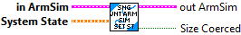
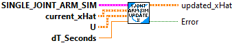

Calculates a rough estimate of the moment of inertia of an arm given its length and mass.
Inputs:
- lengthMeters -- The length of the arm.
- massKg -- The mass of the arm.
Outputs:
- MOI -- The calculated moment of inertia.

The single jointed arm linear system definition is:
- States
- angle position (Rad)
- Inputs:
- motor voltage
- Outputs:
- angle position (rad)

Returns the current arm angle.
Inputs:
- SingleJointArmSim -- updated system data cluster
Outputs:
- ArmAngle-Radians -- The current arm angle (Radians).

Returns the arm current draw.
Inputs:
- SingleJointArmSim -- updated system data cluster
Outputs:
- Current_Amps -- The aram current draw. (Amps)

Returns the current arm velocity.
Inputs:
- SingleJointArmSim -- updated system data cluster
Outputs:
- Velocity_RadPerSec -- The current arm velocity (Radians/Sec).

Returns whether the arm has hit the lower limit.
Inputs:
- SingleJointArmSim -- system data cluster
Outputs:
- AtLowLimit -- Whether the arm has hit the lower limit.

Returns whether the arm has hit the upper limit.
Inputs:
- SingleJointArmSim -- updated system data cluster
Outputs:
- AtHighLimit -- Whether the arm has hit the upper limit.

Creates a simulated arm mechanism.
Inputs:
- maxAngleRads -- The maximum angle that the arm is capable of.
- minAngleRads -- The minimum angle that the arm is capable of.
- gearbox -- The type of and number of motors in the arm gearbox.
- gearing -- The gearing of the arm (numbers greater than 1 represent reductions).
- armMassKg -- The mass of the arm.
- measurementStdDevs -- The standard deviations of the measurements.
- armLengthMeters -- The length of the arm.
- jKgMetersSquared -- The moment of inertia of the arm; can be calculated from CAD software.
- simulateGravity -- Whether gravity should be simulated or not.
Outputs:
- SingleJointArmSim -- system data cluster\
- error -- If TRUE, an error occured.


Custom function to calculate the newX used for integrating to get updated HatX
Inputs:
- Variant -- extra data used by function
for this function, the extra data is; Matrix A, Matrix B, Arm length, Simulator gravity flag.
- X - X matrix
- U - U matrix
Outputs:
- NewX -- X value as a function of (X, U, extra data)
- error -- If TRUE, an error occured.

Sets the input voltage for the arm.
Inputs:
- SingleJointArmSim -- system data cluster
- volts -- The input voltage.
- Battery_Volts -- current battery voltage
Outputs:
- SingleJointArmSim -- updated system data cluster

Sets the system state.
Inputs:
- SngJntArmSim -- Data cluster
- state -- The new state.
Outputs:
- OutSngJntArmSim -- Updated data cluster
- SizeCoerced -- If TRUE, an error occured. Execution may continue.

Updates the simulation.
Inputs:
- SngJntArmSim -- Data cluster
- dtSeconds -- The time between updates.
Outputs:
- OutSngJntArmSim -- Updated data cluster
- Error -- If TRUE, an error occured.

Updates the state of the arm.
Inputs:
- currentXhat -- The current state estimate.
- u -- The system inputs (voltage).
- dtSeconds -- The time difference between controller updates.
Outputs:
- updated_Xhat -- Updated current state estimate
- error -- If TRUE, an error occured.

Returns whether the arm would hit the lower limit.
Inputs:
- SingleJointArmSim -- updated system data cluster
- currentAngleRads -- The current arm height.
Outputs:
- WouldHitLowLimit -- Whether the arm would hit the lower limit.

Returns whether the arm has hit the upper limit.
Inputs:
- SingleJointArmSim -- updated system data cluster
- currentAngleRads -- The current arm height.
Outputs:
- WouldHitHighLimit -- Whether the arm would hit the upper limit.